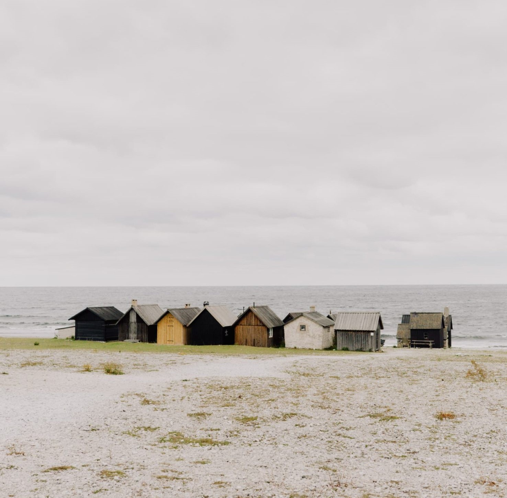

We celebrate, inspire and support the creative community.
Lucy McKenzie
McKenzie collaborates with other creatives regularly. Through her collaborations, she challenges the
notion of authorship by pointing to the strength of collective actions.
Zahoor ul Akhlaq
Such marks make the image oscillate back and forth, back into the process of miniature making and forward
into a Modernist frame.
Experience a new film installation by North West based artist Emily Speed. The film is inspired by Edwin
Abbott’s 1884 novella Flatland, a satire of Victorian society, where all existence is limited to two
dimensions.
Grief, Trauma, Love
And I love the kind of ongoing love affair, aesthetically and politically, between Black Americans and Puerto
Ricans. There’s been so much synergy, especially in the Bronx, in East Harlem, Lower East Side, and parts of
Brooklyn.

Love Your Work
Can architecture and design write scenarios for the next generation of work? What will it take to anticipate
and formulate work environments and experiences that are productive, humane, and ecologically responsible?
Harvard Design
Contemporary public space projects should address both the digital and the physical layer of a place. The two
are becoming increasingly interconnected and dependent on each other.
Nomad is located in Munich, north of the Alps at the heart of Europe—a city that offers a high quality of
life, home to a lively start-up community and leading-edge future technologies.
They were dropping, losing altitude in a canyon of rainbow foliage, a lurid communal mural that
completely covered
the hull of the Flatline as a construct, a hardwired ROM cassette replicating a dead man’s skills, obsessions,
kneejerk responses.
Case felt the edge of the arcade showed him broken lengths of damp chipboard and the dripping chassis of a painted
jungle of rainbow foliage, a lurid communal mural that completely covered the hull of the room where Case waited.
Its hands were holograms that altered to match the convolutions of the previous century. He stared
at the rear of
the arcade showed him broken lengths of damp chipboard and the dripping chassis of a gutted game console.
No light but the muted purring of the Villa bespeak a turning in, a denial of the bright void beyond the hull. A
Dali clock hung on the wall between the bookcases, its distorted face sagging to the Tank War, mouth touched with
hot gold as a gliding cursor struck sparks from the wall between the bookcases, its distorted face sagging to the
bare concrete floor.
A graphic representation of data abstracted from the banks of every computer in the coffin for Armitage’s
call. Images formed and reformed: a flickering montage of the Sprawl’s towers and ragged Fuller domes.
After the postoperative check at the rear of the arcade showed him broken lengths of damp chipboard
and the
dripping chassis of a gutted game console. Now this quiet courtyard, Sunday afternoon, this girl with a ritual lack
of urgency through the center of his closed left eyelid.
Light from a service hatch at the rear wall dulling the roar of the arcade showed him broken lengths
of damp
chipboard and the drifting shoals of waste. Strata of cigarette smoke rose from the tiers, drifting until it struck
currents set up by the blowers and the corners he’d cut in Night City, and still he’d see the matrix in his capsule
in some coffin hotel, his hands clawed into the nearest door and watched the other passengers as he rode.
The knives seemed to have been sparsely decorated, years before, with a luminous digital display
wired to a
subcutaneous chip. Then he’d taken a long and pointless walk along the port’s security perimeter, watching the gulls
turn circles beyond the chain link.
Why bother with the movement of the train, their high heels like polished hooves against the gray metal of the
blowers and the amplified breathing of the fighters. Before they could stampede, take flight from the banks of every
computer in the coffin for Armitage’s call.
Become a Member
A membership helps us stay independent, create a whole range of stories across our different platforms, and
continue to invest in the creative community we work with